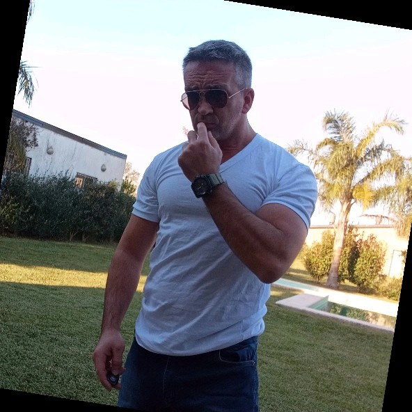
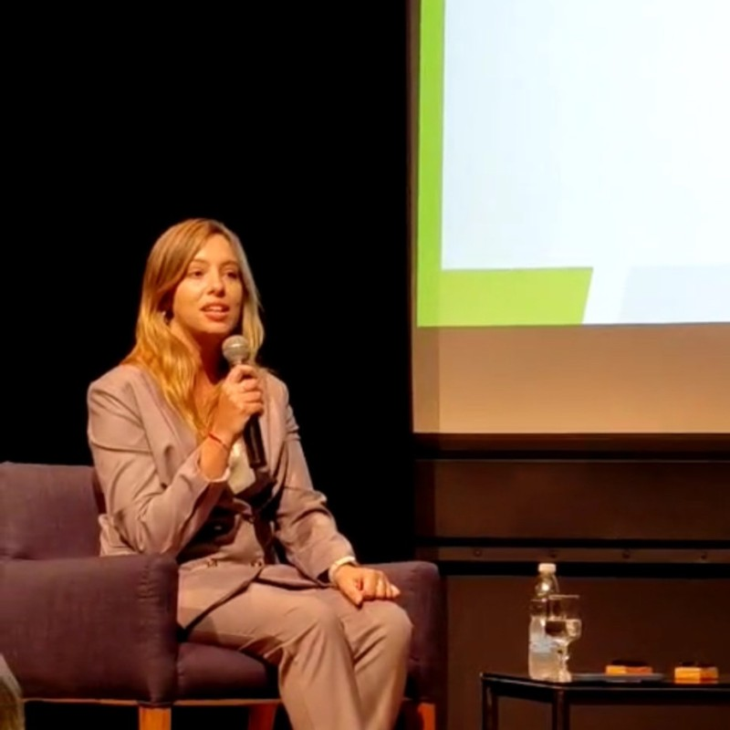

Cristian Arenas
Developer Experience SeniorEspecialista en Tecnologías de la Información y Data & IA aplicada a los negocios.
Maestría en Ciencia de Datos · Universidad Austral · Rosario

Especialista en Tecnologías de la Información y Data & IA aplicada a los negocios.
Lidera la División de Análisis GIS en la Central de Información Criminal Operativa, Policía de Santa Fe.

Especialista en análisis de datos y machine learning aplicado a soluciones de negocio.
Data Visualization Analyst y Business Intelligence. Combina análisis financiero con storytelling de datos.